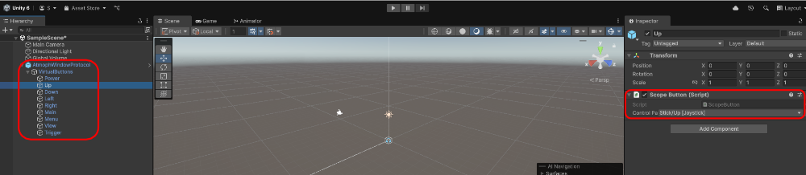
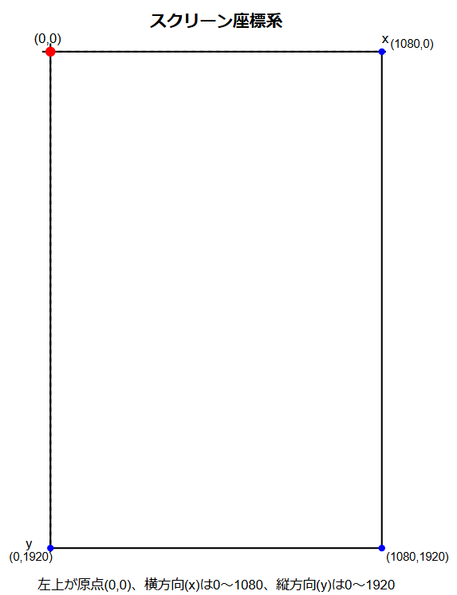
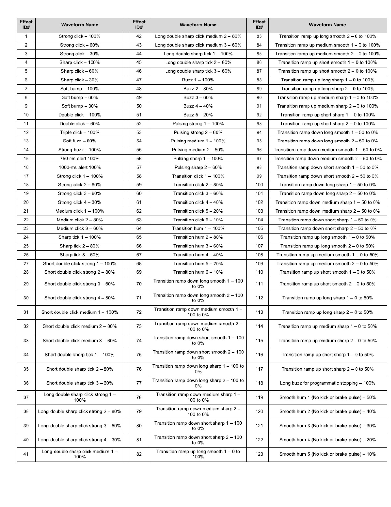

"使い方"の目次
- 1. 基本的な使い方
- 2. 高度な使い方
- 3. その他の機能
1. 基本的な使い方
1.1. Scopeのボタン操作の検知
Scopeのボタン操作は次の二つの方法で検知できます。
1.1.1. ScopeボタンのInputControlへのマッピング
Scopeのボタン操作をUnityが扱えるボタン操作など各種InputControlにマッピングします。 WindowProtocol.prefabをHierarchyウィンドウに追加すると、その子オブジェクトのVirtualButtonsの子オブジェクトにScopeの各ボタンの名称のオブジェクトでマッピング先のInputControlが設定できます。設定先はScope Button(Script)コンポーネントのControl Pathプロパティになります。

デフォルトのマッピングは次のようになっています。
| オブジェクト | InputControl |
|---|---|
| Power | (未設定) |
| Up | Stick/Up [Joystick] |
| Down | Stick/Down [Joystick] |
| Left | Stick/Left [Joystick] |
| Right | Stick/Right [Joystick] |
| Main | (未設定) |
| Menu | (未設定) |
| View | (未設定) |
| Trigget | (未設定) |
Scope Button(Script)コンポーネントはカスタムのOn-Screen Controlで、ScopeButtonクラスはOnScreenControlクラスを継承しています。各ボタンが押された際にはSendValueToControl(1.0f)、離された際にはSendValueToControl(0.0f)が呼び出されます。
1.1.2. Scopeボタンの状態データを取得
WindowProtocol.ScopeRawDataプロパティからその時点のScopeの各種データを取得できます。プロパティの型はIReadOnlyDictionary<string, RawData>で、データを取得したScopeのアドレスをキーにRawDataインスタンスが取得できます。
Note
ただし現状では同時にペアリングされるScopeは1台であるため、Dictionaryに同時に入る要素は一つであり、IReadOnlyDictionary.FirstOrDefaultでもRawDataインスタンスの取得が可能です。
ボタンの状態データはButtonState型であるRawData.buttonプロパティに格納されています。
var data = Atmoph.ScopeRawData.FirstOrDefault().Value;
Log($"ButtonState: {data.button}");1.2. Scopeのズームリングデータの取得
WindowProtocol.ScopeRawDataプロパティからその時点のScopeの各種データを取得できます。プロパティの型はIReadOnlyDictionary<string, RawData>で、データを取得したScopeのアドレスをキーにRawDataインスタンスが取得できます。
Note
ただし現状では同時にペアリングされるScopeは1台であるため、Dictionaryに同時に入る要素は一つであり、IReadOnlyDictionary.FirstOrDefaultでもRawDataインスタンスの取得が可能です。
ズームリングの状態データはint型であるRawData.zoomプロパティに格納されています。
var data = Atmoph.ScopeRawData.FirstOrDefault().Value;
Log($"Zoom: {data.zoom}");1.3. Scopeのポインティング位置、向き、距離センター値の取得
WindowProtocol.ScopeConvertedDataプロパティからその時点のScopeの各種変換済みデータを取得できます。プロパティの型はIReadOnlyDictionary<string, ConvertedData>で、データを取得したScopeのアドレスをキーにConvertedDataインスタンスが取得できます。
Note
ただし現状では同時にペアリングされるScopeは1台であるため、Dictionaryに同時に入る要素は一つであり、IReadOnlyDictionary.FirstOrDefaultでもRawDataインスタンスの取得が可能です。
ポインティング位置のデータはfloat型であるConvertedData.x、ConvertedData.yプロパティに格納されています。
var data = Atmoph.ScopeConvertedData.FirstOrDefault().Value;
Log($"Point position: x-{data.x},x-{data.y}");ポインティング位置の座標はYoの画面に対して次のようになります。

Scopeの向きは、float型であるConvertedData.pitch、ConvertedData.yaw、ConvertedData.rollプロパティに格納されています。
var data = Atmoph.ScopeConvertedData.FirstOrDefault().Value;
Log($"Scope direction: pitch-{data.pitch},yaw-{data.yaw},roll-{data.roll}");Note
クォータニオンでScopeの向きを取得したい場合は、WindowProtocol.ScopeRawDataインスタンスから取得できます。インスタンスの取得方法は1-1-2 Scopeボタンの状態データを取得を参照してください。
距離センター値は、float型であるConvertedData.distanceプロパティに格納されています。Scopeの距離センサーからScopeの筒の方向の障害物までの距離(mm)になります。
var data = Atmoph.ScopeConvertedData.FirstOrDefault().Value;
Log($"Scope distance: {data.distance}");1.4. Scopeの動的情報の取得（接続状態、アドレス、バッテリー残量）
1.4.1. 接続状態、アドレスの取得
2通りの方法でScopeとの接続状態やアドレスが取得できます。
1.4.1.1. WindowProtocol.GetScopesメソッドを使用
WindowProtocol.GetScopesメソッドでScopeのアドレスや接続状態が取得できます。返値の型はBondedScopeです。 返値の要素のBondedScope.scopesはScopeStateのリストになっており、そのプロパティからScopeのアドレスや接続状態が取得できます。
var bondedScope = Atmoph.WindowProtocol.GetScopes();
foreach (Atmoph.BondedScope.ScopeState scope in bondedScope)
{
Log($"ScopeStateBatteryLevel: {scope}");
};1.4.1.2. WindowProtocol.ScopeConnectionStateプロパティを使用
WindowProtocol.ScopeConnectionStateプロパティからScopeのアドレスと接続状態を取得できます。プロパティの型はIReadOnlyDictionary<string, bool>で、データを取得したScopeのアドレスをキーに接続状態をbool型のデータで取得できます。trueは接続中、falseは非接続を表します。 ただし現状では同時にペアリングされるScopeは1台であるため、Dictionaryに同時に入る要素は一つであり、IReadOnlyDictionary.FirstOrDefaultでもデータの取得が可能です。
var state = Atmoph.ScopeConnectionState.FirstOrDefault().Value;
Log($"ScopeConnectionState: address-{state.Key}, connection state-{state.Value}");1.4.1.3. WindowProtocol.OnConnectionStateChangedEventプロパティにコールバックメソッドを追加する
WindowProtocol.OnConnectionStateChangedEventプロパティはUnityEvent型で、追加したコールバックメソッドは新しいScopeが接続されたタイミングと、接続されていたScopeの接続が切れたタイミングで呼び出されます。
コールバックメソッドの追加や削除はUnityEventのメソッドを使って実施してください。
Atmoph.WindowProtocol.OnConnectionStateChangedEvent.AddListener(OnScopeStateChanged);
private void OnScopeStateChanged()
{
var state = Atmoph.WindowProtocol.ScopeConnectionState.FirstOrDefault();
Debug.Log($"OnScopeStateChanged. {state.Key}: {state.Value}");
}
Atmoph.WindowProtocol.OnConnectionStateChangedEvent.RemoveListener(OnScopeStateChanged);
Important
アプリ終了時には、WindowProtocol.OnConnectionStateChangedEventプロパティから追加したコールバックメソッドを全て削除してくだい。
1.4.2. バッテリー残量の取得
WindowProtocol.GetBatteryLevelメソッドでScopeのバッテリー残量を取得できます。引数で指定したアドレスのScopeのバッテリー残業が、int型の返値で返ります。値は満充電に対するバッテリー残量の割合となっており、パーセンテージで0～100の値になります。
var batteryLevel = Atmoph.WindowProtocol.GetBatteryLevel("address");
Log($"BatteryLevel: {batteryLevel}");Note
Scopeとの接続直後など、Scopeのバッテリー残量が正確に把握できていない状態では、Scopeと接続されていてもバッテリー残量の値は'-1'になります。
1.5. Scopeの静的情報の取得(本体型番、シリアルナンバー、FWバージョン、PnPID)
WindowProtocol.GetScopeInfoメソッドで、引数で指定したアドレスのScopeの静的情報を取得できます。返値の型はScopeInfoです。
var scopeInfo = Atmoph.WindowProtocol.GetBatteryLevel("address");
Log($"ScopeInfo: {scopeInfo}");1.6. Scopeへの振動指示
次の２つのメソッドで、Scopeのバイブレーション機能を起動できます。
WindowProtocol.Vibrate WindowProtocol.VibrateToAll
前者はtargetAddress引数で指定したScopeのみの振動指示、後者は接続している全Scopeへの振動指示となります。 pattern引数で振動の種類を指示します。次の仕様になります。

1.7. Unityアプリの終了を本体に伝える
WindowProtocol.GoBackToWindowメソッドでアプリケーションの終了を本体に伝え、風景再生画面に戻ります。
Important
アプリケーション終了時には必ず呼び出してください。
Note
アプリケーションの終了処理はアプリケーション自身で行う必要があります。
2. 高度な使い方
Note
WindowProtocolを継承するカスタムクラスを作成する方法を採用した場合、WindowProtocolにアタッチされているWindowProtocol.csコンポーネントをカスタムクラスに差し替えてください。
2.1. Scopeのボタン操作のコールバックメソッドによる検知方法
Scopeのボタン操作を検知する方法で、1.1. Scopeのボタン操作の検知よりも自由度の高い方法として、「Scopeボタンの状態が変わった際に呼ばれるコールバックメソッドをオーバーライド」があります。 WindowProtocolを継承するカスタムクラスを作成し、WindowProtocol.OnButtonsStateChangedメソッドをオーバーライドします。このメソッドはScopeボタンの状態が変わったタイミングで呼び出されますので、必要な処理を実装することができます。
カスタム実装にはWindowProtocol.OnButtonsStateChangedメソッドの実装を参考にできます。引数のdataを使って、次のコードでButtonStateChangedインスタンスを取得できます。
ButtonStateChanged buttonStates = JsonUtility.FromJson<ButtonStateChanged>(data);
2.2. Scopeのズームリングデータのコールバックメソッドによる取得方法
Scopeのズームリングデータを取得する方法で、1.2. Scopeのズームリングデータの取得よりも自由度の高い方法として、「Scopeのズームリングの値が変わった際に呼ばれるコールバックメソッドをオーバーライド」があります。 WindowProtocolを継承するカスタムクラスを作成し、WindowProtocol.OnEncoderValueChangedメソッドをオーバーライドします。このメソッドはScopeのズームリングの値が変わったタイミングで呼び出されますので、必要な処理を実装することができます。
カスタム実装にはWindowProtocol.OnEncoderValueChangedメソッドの実装を参考にできます。引数のdataを使って、次のコードでIntegerChangedインスタンスを取得できます。
IntegerChanged integerChanged = JsonUtility.FromJson<IntegerChanged>(data);
IntegerChanged.previousで変更前の値、IntegerChanged.currentで変更後の現在の値が取得できます。
2.3. Scopeのバッテリー残量のコールバックメソッドによる取得方法
Scopeのバッテリー残量を取得する方法で、1.4.2 バッテリー残量の取得よりも自由度の高い方法として、「Scopeのバッテリー残量の値が変わった際に呼ばれるコールバックメソッドをオーバーライド」があります。 WindowProtocolを継承するカスタムクラスを作成し、WindowProtocol.OnBatteryLevelChangedメソッドをオーバーライドします。このメソッドはScopeのバッテリー残量の値が変わったタイミングで呼び出されますので、必要な処理を実装することができます。
カスタム実装にはWindowProtocol.OnEncoderValueChangedOnBatteryLevelChangedメソッドの実装を参考にできます。引数のdataを使って、次のコードでIntegerChangedインスタンスを取得できます。
IntegerChanged integerChanged = JsonUtility.FromJson<IntegerChanged>(data);
IntegerChanged.previousで変更前の値、IntegerChanged.currentで変更後の現在の値が取得できます。
2.4. Scopeの接続状態、アドレス取得のコールバックメソッドによる取得方法
Scopeの接続状態やアドレスを取得する方法で、1.4.1. 接続状態、アドレスの取得よりも自由度の高い方法として、「Scopeが接続された際、また接続が切れた際に呼ばれるコールバックメソッドをオーバーライド」があります。 WindowProtocolを継承するカスタムクラスを作成し、WindowProtocol.OnConnectedメソッド、WindowProtocol.OnDisconnectedメソッドをオーバーライドします。前者のメソッドはScopeが接続されたタイミング、後者のメソッドは接続が切れたで呼び出されますので、必要な処理を実装することができます。
カスタム実装にはWindowProtocol.OnConnectedメソッド、WindowProtocol.OnDisconnectedメソッドの実装を参考にできます。引数のdataを使って、次のコードでScopeAddressインスタンスを取得できます。これが接続された、または接続が切れたScopeのアドレスになります。
ScopeAddress scopeAddress = JsonUtility.FromJson<ScopeAddress>(data);
2.5. Scopeのポインティング位置、向き、距離センター値のコールバックメソッドによる取得方法
Scopeのポインティング位置、向き、距離センター値を取得する方法で、1.3. Scopeのポインティング位置、向き、距離センター値の取得よりも自由度の高い方法として、「ScopeのScopeConvertedDataデータが更新された際に呼ばれるコールバックメソッドをオーバーライド」があります。 WindowProtocolを継承するカスタムクラスを作成し、WindowProtocol.OnDataConvertedメソッドをオーバーライドします。このメソッドはScopeのScopeConvertedDataに含まれるデータが更新されたタイミングで呼び出されますので、必要な処理を実装することができます。
カスタム実装にはWindowProtocol.OnDataConvertedメソッドの実装を参考にできます。引数のdataを使って、次のコードでScopeConvertedDataインスタンスを取得できます。
ConvertedData convertedData = JsonUtility.FromJson<ConvertedData>(data);
2.6. Scopeのボタン状態、ズームリングデータ、クォータニオンのコールバックメソッドによる取得方法
Scopeのボタン状態、ズームリングデータ、クォータニオンを取得する方法で、1.2. Scopeのズームリングデータの取得や1.1.2. Scopeボタンの状態データを取得よりも自由度の高い方法として、「ScopeのRawDataデータが更新された際に呼ばれるコールバックメソッドをオーバーライド」があります。 WindowProtocolを継承するカスタムクラスを作成し、WindowProtocol.OnRawDataメソッドをオーバーライドします。このメソッドはScopeのRawDataに含まれるデータが更新されたタイミングで呼び出されますので、必要な処理を実装することができます。
カスタム実装にはWindowProtocol.OnRawDataメソッドの実装を参考にできます。引数のdataを使って、次のコードでRawDataインスタンスを取得できます。
RawData rawData = JsonUtility.FromJson<RawData>(data);
3. その他の機能
3.1. Offset
Scopeにはメニューボタン長押しで起動する「ポインティング位置のリセット」機能があります。風景再生時には機能が実行されるとポインティング位置が画面中央にリセットされます。このような機能をアプリケーションにも組み込むには、リセット時に保持されるOffset値を使います。
3.1.1. WindowProtocol.ScopeOffset、WindowProtocol.ScopeRawOffset プロパティからのOffsetの取得
最後にリセット機能が実行された際のScopeのScopeConvertedData、RawDataは、Offset値としてそれぞれ次のプロパティに保持されます。
風景再生時のようなポインティング位置のリセット機能をアプリケーションに組み込みたい場合は、これらOffset値を次のプロパティから取得できる現時点のScopeConvertedData、RawDataデータから引くことで、リセット時からの遷移分のデータが取得できます。
3.1.2. WindowProtocol.OnOffsetResetコールバックによるOffsetの取得
「Scopeのポインティング位置のリセット機能が実行された際に呼ばれるコールバックメソッドをオーバーライド」でもOffset値の取得が可能です。 WindowProtocolを継承するカスタムクラスを作成し、WindowProtocol.OnOffsetResetメソッドをオーバーライドします。このメソッドはScopeのポインティング位置のリセットが実行されたタイミングで呼び出されますので、必要な処理を実装することができます。
カスタム実装にはWindowProtocol.OnOffsetResetメソッドの実装を参考にできます。引数のdataを使って、次のコードでScopeOffsetインスタンスを取得できます。
ScopeOffset scopeOffset = JsonUtility.FromJson<ScopeOffset>(data);